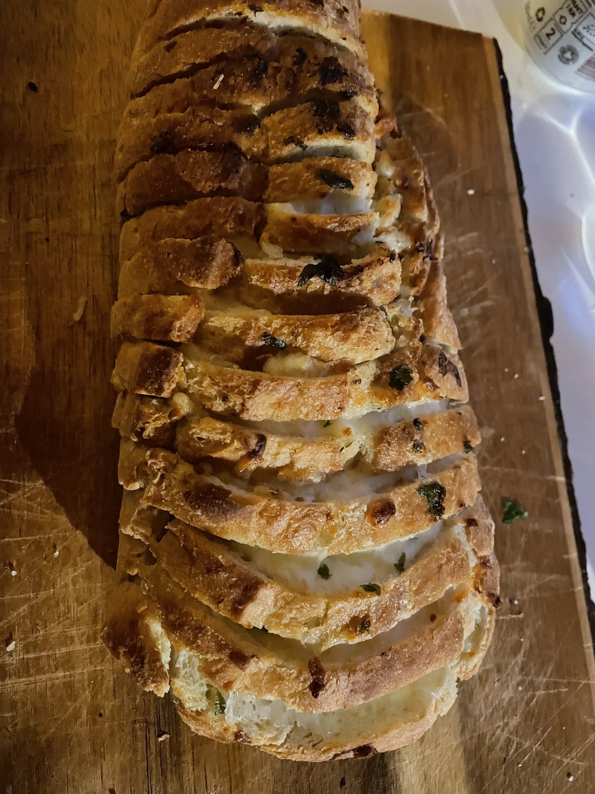

Pan de ajo
Ingredientes
×
- 1 barra de pan (tipo baguette)
- mantequilla
- ajo en polvo
- sal
- queso rallado

Preparación
Paso 1
Cortar 1 barra de pan (tipo baguette) en rebanadas del ancho de una tostada, pero sin llegar a cortarlas del todo (de forma que el pan quede unido por debajo).
Paso 2
Deshacer mantequilla y añadirle ajo en polvo (al gusto) y sal.
Paso 3
Con una cuchara, verter la “salsa” en cada espacio. Al final, poner también un poco por encima. Para la versión con queso, meter también queso rallado entre las rebanadas.
Paso 4
Hornear hasta que el pan quede dorado. Al sacarlo, acabar de cortar las tostadas.
Resumen
1 barra de pan (tipo baguette)
Cortar
mantequilla
ajo en polvo
sal
Deshacer
queso rallado
verter
Hornear